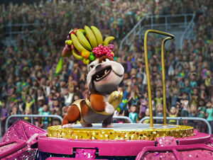
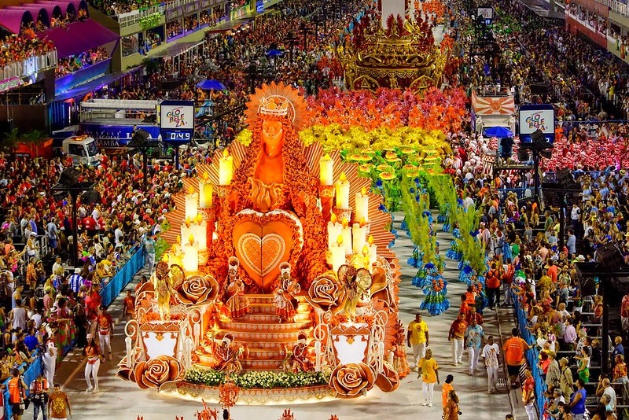
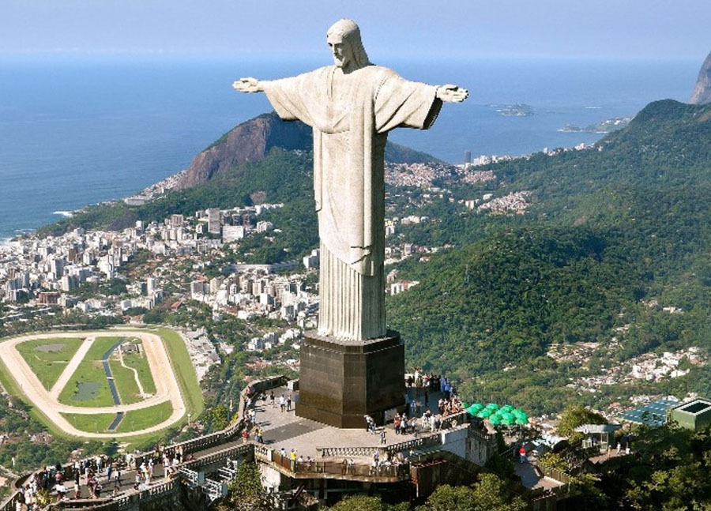
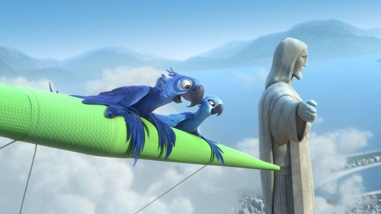
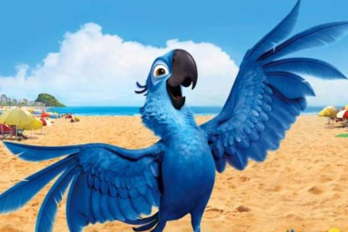
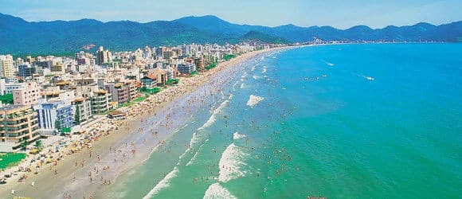

Rio de Janeiro
Rio de Janeiro é um dos principais centros econômicos, culturais e financeiros do país, sendo internacionalmente conhecido por diversos ícones culturais e paisagísticos, como o Pão de Açúcar, o morro do Corcovado com a estátua do Cristo Redentor, as praias dos bairros de Copacabana, Ipanema e Barra da Tijuca, e os estádios do Maracanã e Nilton Santos.
Capturada por contrabandistas de animais quando tinha acabado de nascer, a arara Blu nunca aprendeu a voar e vive uma vida domesticada feliz em Minnesota, nos Estados Unidos, com sua dona, Linda. Blu pensa que é a última arara de sua espécie. Mas quando descobrem que Jewel, uma fêmea, vive no Rio de Janeiro, Blu e Linda vão ao seu encontro. Os contrabandistas capturam Blu e Jewel, mas as aves escapam e começam uma aventura arriscada rumo à liberdade.
Público no Brasil
6.370.218 brasileiros foram aos cinemas assistir as aventuras da ararinha azul.
Na Cidade Maravilhosa
A pré-estreia mundial aconteceu em 22 de março de 2011, na cidade do Rio de Janeiro. Vieram à cidade os dubladores Anne Hathaway, Jesse Eisenberg, Jamie Foxx, Jemaine Clement e Will.I.Am.
Trabalho dobrado
Rodrigo Santoro dubla o personagem Túlio nas versões em inglês e em português do filme.
Busca pela perfeição
Foi desenvolvido um novo renderizador de penas chamado Ruffle Deformer, que permitiu aos animadores criar e moldar as penas com um detalhismo jamais obtido até então. Cada pena de Blu foi pintada de azul, sendo posteriormente adicionados os detalhes, as luzes e as texturas da superfície, como arranhões, marcas e depressões no bico.

O Sambódromo O projeto do sambódromo, de autoria do famoso arquiteto Oscar Niemeyer, teve como objetivo único dotar a cidade de um palco urbano permanente para a exibição do maior espetáculo da terra: Os desfiles das escolas de samba do Carnaval do Rio de Janeiro.
Como chegar: De táxi, o Sambódromo tem acordo com duas companhias de táxi autorizados que irão te deixar dentro do Sambódromo.Outra opção são os ônibus convencionais, que são o meio mais barato de transporte disponível porém o meio menos indicado para chegar ao sambódromo, pois muitas rotas de ônibus mudam durante os dias de desfile.Uma das melhores maneiras de chegar até o Sambódromo é de metrô. Os trens partem a cada 10 minutos durante a noite inteira com muitos foliões fantasiados indo para a Sapucaí e o serviço funciona 24 horas durante os dias de desfile.
Preço: No Brasil, os desfiles das escolas de samba são divididos em grupo de acesso e grupo especial. Os valores variam entre R$128,00 a R$728,00. Para maiores informações acesse carnaval-ingressos-rio.


Uma das 7 maravilhas do mundo: O Cristo Redentor, símbolo da Cidade do Rio de Janeiro, foi eleito como uma das 7 Novas Maravilhas do Mundo Moderno, em votação realizada pela internet e por mensagens de celular, organizada pela New 7 Wonders Foundation, da Suiça, entre 21 monumentos participantes de todo o planeta. O cartão postal carioca de 38 metros.
Medidas: A cabeça da escultura mede 3,75 m e pesa 30 toneladas. Ela foi feita com 50 peças, é oca e tem uma saída para o topo da estátua. Acima da cabeça do Cristo Redentor, há uma coroa de espinhos, Ela também serve como para-raios, uma vez que é o ponto mais alto da cidade do Rio de Janeiro.
Como chegar ao Cristo Redentor: Com o Trem do Corcovado ou com vans autorizadas.Tanto o trem quanto as vans levam a um ponto próximo ao Cristo, onde há escadas ou elevadores para ir até a estátua. A estação de metrô mais próxima é a Largo do Machado, de onde partem vans credenciadas.
Preço: Em uma breve pesquisa foi verificado que o ticket médio para visitar o Cristo Redentor é de R$ 151,50 reais, estas reservas podem ser efetuadas através do Tripadvisor.


História: No início do século XX começou o grande avanço na Vila de Ipanema. Situado próximo dos grandes bairros, como o Flamengo, Botafogo, Copacabana e Leblon, a praia de Ipanema começou a cair no gosto da população, e principalmente dos turistas.Com isso, em 1902 foi inaugurada as li ,nhas de bonde que começaram a facilitar a circulação da Vila de Ipanema. A partir deste período, várias inovações foram acontecendo com esta região, e tornando-a cada vez mais populosa. Em 1918, o colégio dos Franciscanos e a Igreja Nossa Senhora da Paz foram construídos na Rua 20 de Novembro, hoje conhecida como Rua Visconde de Pirajá.
Inspiração artística: A praia de Ipanema foi Inspiração de Vinícius de Moraes para compor a música “Garota de Ipanema”, existe uma história bem interessante sobre essa garota e essa praia.
Bela praia de Ipanema Bela praia de Ipanema, Compras na Feira Hippie, Passeio de Arquipélago de Cagarras, Curtir os barzinhos da região, Passeio pela Lagoa Rodrigo de Freitas, Pôr do sol no Arpoador.
Preço: entrada gratuita.

avaliação-Fonte: Tripadvisor